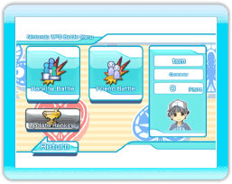

11 |
Nintendo WFC Battle Menu |
 |

If you select "Nintendo WFC Battle" in the "Nintendo WFC Menu", then the "Nintendo WFC Battle Menu" will be displayed.
Select "Ranking Battle" and select your stage and cards and look for an opponent. If you cannot gather 4 people, then a CPU will be entered in their place. ※In a "Ranking Battle", you will obtain points from the result placement.
1st Place: 10 Points 2nd Place: 5 Points 3rd Place: 2 Points 4th Place: -2 Points If you get more points, you can obtain titles and items. ※After the match making, if a player leaves in the middle of a game, 4 points will be deducted as a penalty. Please be careful.
When you can not gather 4 people, a CPU will be entered in its place. ※If you select "Friend Battle" it will move on to the "Friend Battle Menu".
|
 |
 |
 |